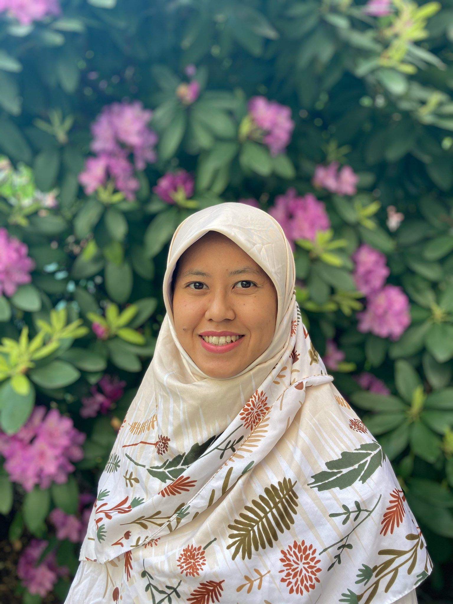

Research
Designing and evaluating nutrition, maternal-child health, and clinical counseling studies with an emphasis on evidence-based outcomes.
Ummu Ditya Erliana, PhD, RDN, CLC, is a lecturer in the Nutrition Department at Universitas Brawijaya, with academic and clinical training from Saint Louis University, Indiana University Bloomington, and Massachusetts General Hospital Dietetic Internship.

Focusing on the integration of clinical nutrition science, maternal and child health research, and community engagement to create sustainable health impacts.
Designing and evaluating nutrition, maternal-child health, and clinical counseling studies with an emphasis on evidence-based outcomes.
Extending nutrition education and empowerment into schools, clinics, and community settings through practical service programs.
Teaching undergraduate and graduate courses, advising students, and coordinating dietetic education and clinical rotations.
Ringkasan peran profesional dan jangkauan akademik saya. Silakan eksplorasi halaman detail untuk informasi lebih mendalam mengenai publikasi dan layanan saya.